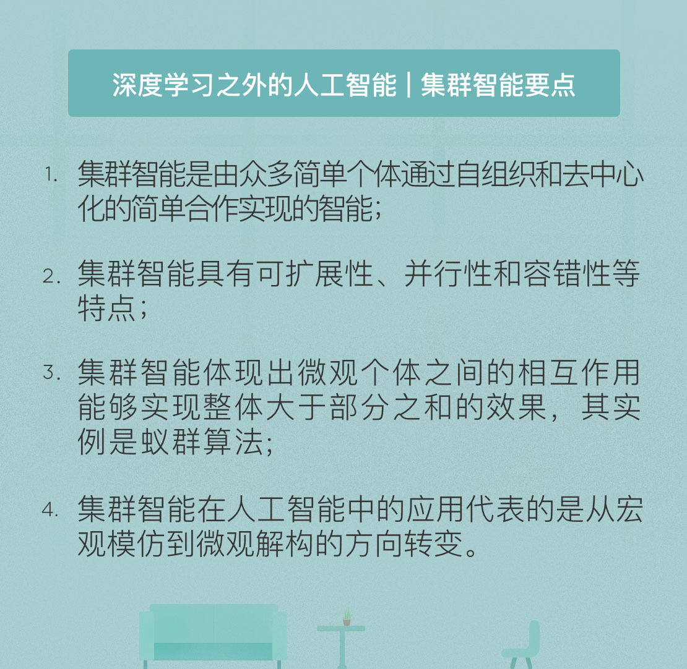

- 00 开篇词 人工智能：新时代的必修课.md.html
- 01 数学基础 九层之台，起于累土：线性代数.md.html
- 02 数学基础 月有阴晴圆缺，此事古难全：概率论.md.html
- 03 数学基础 窥一斑而知全豹：数理统计.md.html
- 04 数学基础 不畏浮云遮望眼：最优化方法.md.html
- 05 数学基础 万物皆数，信息亦然：信息论.md.html
- 06 数学基础 明日黄花迹难寻：形式逻辑.md.html
- 07 机器学习 数山有路，学海无涯：机器学习概论.md.html
- 08 机器学习 简约而不简单：线性回归.md.html
- 09 机器学习 大道至简：朴素贝叶斯方法.md.html
- 10 机器学习 衍化至繁：逻辑回归.md.html
- 11 机器学习 步步为营，有章可循：决策树.md.html
- 12 机器学习 穷则变，变则通：支持向量机.md.html
- 13 机器学习 三个臭皮匠，赛过诸葛亮：集成学习.md.html
- 14 机器学习 物以类聚，人以群分：聚类分析.md.html
- 15 机器学习 好钢用在刀刃上：降维学习.md.html
- 16 人工神经网络 道法自然，久藏玄冥：神经网络的生理学背景.md.html
- 17 人工神经网络 一个青年才俊的意外死亡：神经元与感知器.md.html
- 18 人工神经网络 左手信号，右手误差：多层感知器.md.html
- 19 人工神经网络 各人自扫门前雪：径向基函数神经网络.md.html
- 20 人工神经网络 看不见的手：自组织特征映射.md.html
- 21 人工神经网络 水无至清，人莫至察：模糊神经网络.md.html
- 22 深度学习 空山鸣响，静水流深：深度学习概述.md.html
- 23 深度学习 前方有路，未来可期：深度前馈网络.md.html
- 24 深度学习 小树不修不直溜：深度学习中的正则化.md.html
- 25 深度学习 玉不琢不成器：深度学习中的优化.md.html
- 26 深度学习 空竹里的秘密：自编码器.md.html
- 27 深度学习 困知勉行者勇：深度强化学习.md.html
- 28 深度学习框架下的神经网络 枯木逢春：深度信念网络.md.html
- 29 深度学习框架下的神经网络 见微知著：卷积神经网络.md.html
- 30 深度学习框架下的神经网络 昨日重现：循环神经网络.md.html
- 31 深度学习框架下的神经网络 左右互搏：生成式对抗网络.md.html
- 32 深度学习框架下的神经网络 三重门：长短期记忆网络.md.html
- 33 深度学习之外的人工智能 一图胜千言：概率图模型.md.html
- 34 深度学习之外的人工智能 乌合之众的逆袭：集群智能.md.html
- 35 深度学习之外的人工智能 授人以鱼不如授人以渔：迁移学习.md.html
- 36 深度学习之外的人工智能 滴水藏海：知识图谱.md.html
- 37 应用场景 你是我的眼：计算机视觉.md.html
- 38 应用场景 嘿, Siri：语音处理.md.html
- 39 应用场景 心有灵犀一点通：对话系统.md.html
- 40 应用场景 数字巴别塔：机器翻译.md.html
- 一键到达 人工神经网络复习课.md.html
- 一键到达 应用场景复习课.md.html
- 一键到达 数学基础复习课.md.html
- 一键到达 机器学习复习课.md.html
- 一键到达 深度学习之外的人工智能复习课.md.html
- 一键到达 深度学习复习课.md.html
- 一键到达 深度学习框架下的神经网络复习课.md.html
- 推荐阅读 我与人工智能的故事.md.html
- 新书 《裂变：秒懂人工智能的基础课》.md.html
- 直播回顾 机器学习必备的数学基础.md.html
- 第2季回归 这次我们来聊聊机器学习.md.html
- 结课 溯洄从之，道阻且长.md.html
- 课外谈 “人工智能基础课”之二三闲话.md.html
- （课外辅导）人工神经网络 拓展阅读参考书.md.html
- （课外辅导）数学基础 拓展阅读参考书.md.html
- （课外辅导）机器学习 拓展阅读参考书.md.html
- （课外辅导）深度学习 拓展阅读参考书.md.html
- 捐赠
34 深度学习之外的人工智能 乌合之众的逆袭：集群智能
梅拉妮·米切尔在《复杂》中举过一个例子：在巴西的亚马逊雨林中，几十万只行军蚁（已知的行为最简单的生物）正在行进。用现在时髦的话说，这是一支去中心化、自组织的大军。在这个蚁蚁平等的团体中，单个蚂蚁几乎没有视力，也不具备什么智能。可聚集成团体的他们组成了扇形的团状，一路风卷残云地吃掉所有能吃掉的，带走所有能带走的。高效的它们只需一天就能消灭雨林里一个足球场面积内的所有食物。到了夜间，蚂蚁会自发形成一个球体，保护起蚁后和幼蚁，天亮后又各就各位，继续行军。
快速飞行的蝙蝠群在狭窄的洞穴中互不碰撞，大雁群在飞行时自发地排列成人字形、海洋鱼群通过几何构型充分利用水流的能量……这些自然界中的集群行为早早就吸引了人类的注意。在由大量数目的生物个体构成的群体中，不同个体之间的局部行为并非互不相关，而是互相作用和影响，进而作为整体化的协调有序的行为产生对外界环境的响应。生物群体正是通过个体行为之间的互动达到“整体大于部分之和”的有利效果，就像一百只行军蚁只会横冲直撞，一百万只行军蚁却能整齐划一。
实现集群智能的智能体必须能够在环境中表现出自主性、反应性、学习性和自适应性等一系列智能特性，但这并不意味着群体中的个体都很复杂。集群智能的核心是由众多简单个体组成的群体能够通过相互之间的简单合作来实现某些功能，完成某些任务。其中，“简单个体”是指单个个体只具有简单的能力或智能，“简单合作”是指个体与其邻近的个体只能进行某种简单的直接通信或通过改变环境间接与其它个体通信，从而可以相互影响、协同动作。
与高大上的深度学习不同，集群智能既不需要汪洋浩瀚的物理数据，也不需要艰深晦涩的数学算法，难道蚂蚁和大雁会计算微积分吗？集群智能的基础只是作用于个体的运行准则和作用于整体的通用目标，这些目标通常还都很简单。可正是数量足够庞大的简单规则才孕育出了整体意义上的高级智能，这也验证了量变引发质变的哲学观点。
从抽象的角度来说，群体行为是大量自驱动个体的集体运动，每个自驱动个体都遵守一定的行为准则，当它们按照这些准则相互作用时就会表现出上述的复杂行为。群体本身不具备中心化的结构，而是通过个体之间的识别与协同达成稳定的分布式结构。这个分布式结构会随着环境的变化，以自身为参考系不断趋于新的稳定。集群智能（swarm intelligence）正是群居性生物通过协作表现出的自组织与分布式的宏观智能行为，它具有如下的特点：
第一个特点是可扩展性。广义的可扩展性意味着系统可以在增加体量的同时保持功能的稳定，而不需要重新定义其部件交互的方式。集群智能系统中的作用方式通常是个体间的间接通信，因而互动的个体数量往往不会随着群体中个体的总数量的增加而增长，每个个体的行为只受群体维度的松散影响。在人造的集群智能算法中，可扩展性保证了通过简单扩充来增强算法性能的可行性，而不需要重新编程。
第二个特点是并行性。集群智能系统天然具有并行性，这是因为组成集群的个体完全可以同时在不同的地方执行不同的行为。在人造的集群智能算法中，并行性能够增强系统的灵活性，能够在同时处理复杂任务不同方面的集群中自行组织。同时，并行性也决定了集群智能具有较强的环境适应能力和较强的鲁棒性（Robust），不会由于若干个体出现故障而影响群体对整个问题的求解。
第三个特点是容错性。去中心化和自组织的特点让容错性成为集群智能系统的固有属性。由于集群系统由许多可以互换的个体组成，他们中没有一个总司令负责控制整个系统的行为，所以一个失败的个体很容易被另一个完全正常运作的个体所取代。除此之外，去中心化的特性也大大降低了系统全面崩溃的可能性。
用集群智能方法实现人工智能，代表的是研究方式的转变。不管是人工神经网络还是深度学习，其本质都是对人类思维的功能模拟，采用的方法论是机械论的哲学，而机械论中先验规则设定的前提决定了功能模拟的方式很难产生人类水平的智能。既然机械论这条路走不通，研究者们便开始转向另一条可能的道路：从结构模拟出发，通过人为创造类似人类脑神经系统的结构模型，实现智能的大规模涌现。
功能模拟的任务是重新制造出类人脑的复杂系统，结构模拟的任务则是复制出人脑这个复杂系统。一般来说，复制的难度要低于制造的难度。二进制的计算机可以通过算法代替人类执行特定的任务，但算法的核心问题也恰恰在于只能执行特定的任务，而不具备通用性，想要生成人类思维的特质，比如创造力和想象力，更是绝无可能。
结构模拟的理论基础在于对复杂系统的认识。当构成一个系统的基本单元数量极为庞大时，将这些个体看作一个整体，就会有一些全新的属性、规律或模式自发地冒出来，这种现象就称为“涌现”（emergence）。
对于涌现现象来说，大量微观层次上的交互导致对其功能性的描述过于困难，结构化的模拟反倒成为一种直观有效的方式。对涌现现象的代表性应用，就是以蚁群算法为代表的各类粒子群算法。
在蚁群系统中，单只蚂蚁便是构成这一复杂系统的基本单元。在单只蚂蚁活动范围受限的情况下，整个蚁群中不同蚂蚁之间的协作与联动，却能够很快找到一条将食物搬回巢穴的最优路径。更重要的是，这一行为完全是自组织的行为，并不存在一个上帝视角的蚁后如元帅般指挥蚂蚁们的行动轨迹，这条最优线路完全是自发找到的。
蚁群的行为给善于向自然学习的人类以新的启发：只对单只蚂蚁的简单行为进行建模，系统中不同蚂蚁间复杂的大规模互动过程交给蚂蚁自己完成，这样能否产生“涌现”的效果呢？
基于这样的想法，意大利米兰理工学院的马可·多里戈博士在他的博士论文中提出了蚁群优化算法（ant colony optimization）：通过对蚁群在寻找食物过程中发现最优路径行为的模拟来寻找问题的最优解。
蚁群算法的初始化是让第一批蚂蚁随机出发，独立且并行地搜索问题的解，对解的搜索就是蚂蚁对路径的选择。在行进的过程中，蚂蚁会在自己的路径上释放信息素，信息素的强度是与解的最优程度成正比的，新的蚂蚁则会根据已有信息素的强度选择自己的行进路径。
随着搜索的不断进行，信息素也会发生动态变化：旧蚂蚁留下的信息素会不断蒸发，新蚂蚁经过后则会产生新的信息素。蚁群的集群化搜索会产生聚集作用，最优路径会被越来越多的蚂蚁发现，信息素的强度也会逐渐增大，从而将更多蚂蚁吸引过来，被下一只蚂蚁选择的概率也就进一步增加。蚁群算法就是利用这种正反馈机制逐步遍历解空间，使搜索向最优解推进。
在不断的实践中，蚁群算法不仅被证明是个相当靠谱的优化算法，还激发出了鸟群、蜂群等其他类似原理的最优化算法。当然，蚁群算法也有它的限制条件：只有当基本单元的数量足够巨大时，“涌现”的结果才会出现。当蚂蚁数目太少的时候是达不到“涌现”效果的。
蚁群的行为与蚁群算法的诞生对人工智能的研究也是一种启示：相对于宏观的功能模拟，结构模拟重于微观的解构。
功能模拟是个自顶向下的过程：先确定要完成的任务，再来设计任务实现的方式。结构模拟则是个自底向上的过程：只对最底层的基本单元及其运作方式进行定义，并让这些基本单元在微观层面上进行交互，从而自发地生成各种宏观行为。
在这个过程中，结构模拟回避了复杂系统中复杂性形成的过程，以放任自流的方式让微观单元自己完成。这未尝不是个好办法：当现有的技术水平远远不足以透彻地研究复杂系统时，与其通过功能模拟人为地对其运作方式进行武断地判断，不如采用无为而治的方式，发挥基本单元的自然天性，看看它能造出个什么世界。
今天我和你分享了集群智能方法的现实依据，以及它所代表的研究方向。其要点如下：
- 集群智能是由众多简单个体通过自组织和去中心化的简单合作实现的智能；
- 集群智能具有可扩展性、并行性和容错性等特点；
- 集群智能体现出微观个体之间的相互作用能够实现整体大于部分之和的效果，其实例是蚁群算法；
- 集群智能在人工智能中的应用代表的是从宏观模仿到微观解构的方向转变。
虽说神经网络模拟的是思维功能，但从结构模拟的角度看，深度神经网络其实也可以归入集群智能的范畴。那么关于集群智能的研究又能给神经网络带来哪些启发呢？
欢迎发表你的观点。

© 2019 - 2023 Liangliang Lee. Powered by gin and hexo-theme-book.